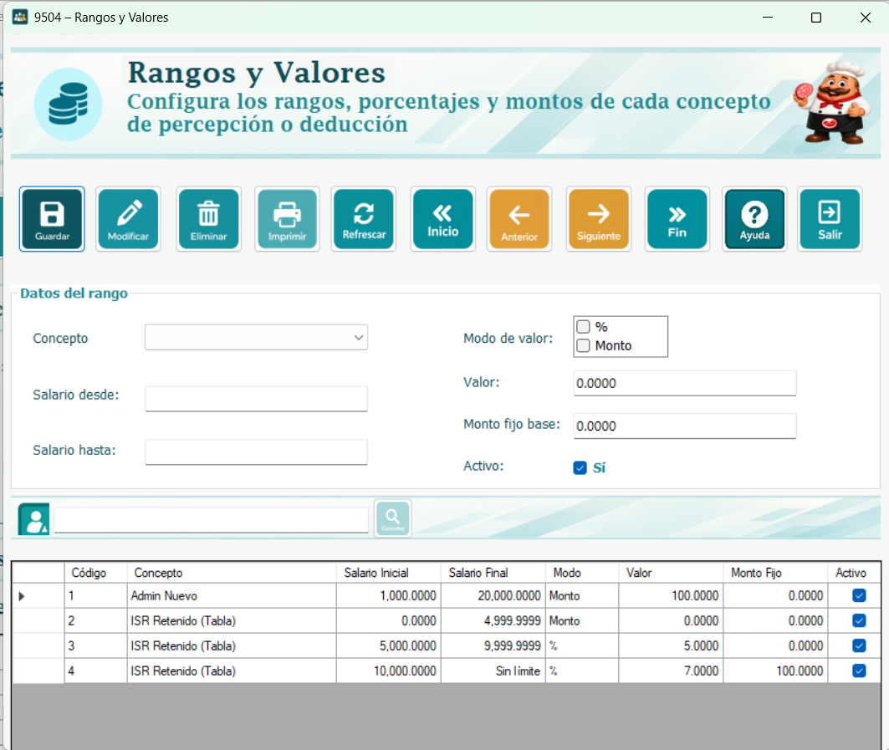
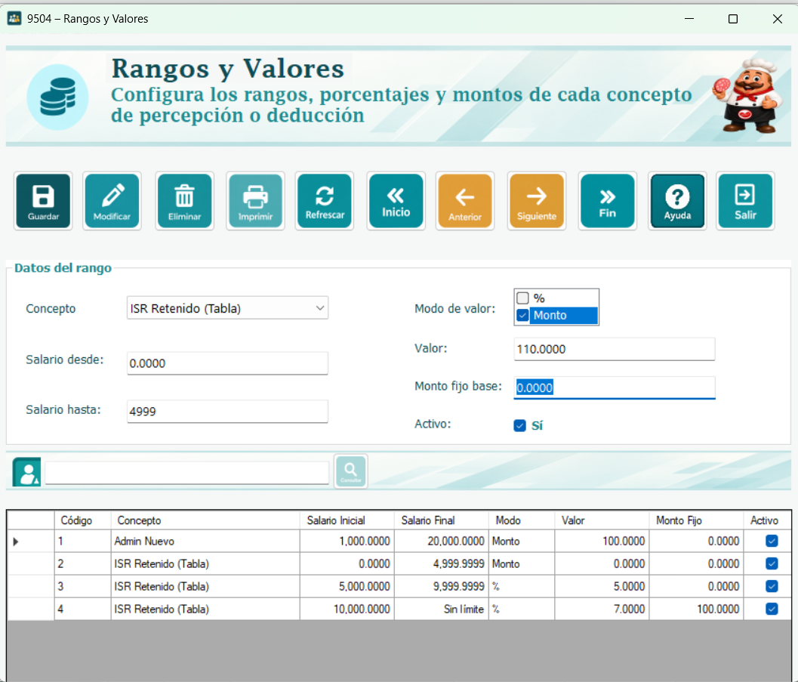
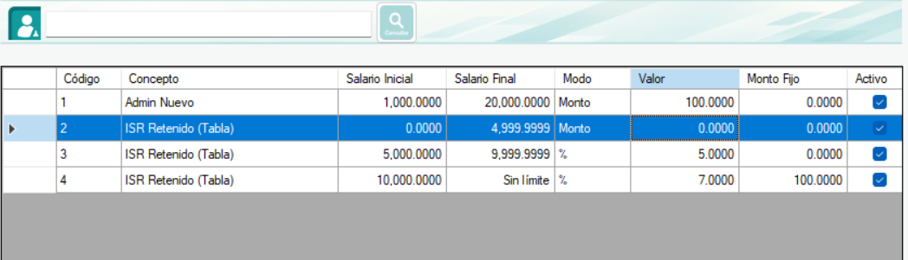

Este formulario administra los intervalos de salario que utiliza un concepto de tipo Tabla. Cada rango tiene un salario inicial, un salario final opcional, un modo de cálculo, un valor y un monto fijo base. Cuando se calcula la nómina, se busca el rango activo que contiene el salario del empleado y se utiliza su configuración.
El rango no es una asignación de empleados. Define cuánto corresponde calcular para un nivel salarial; el catálogo del concepto y sus asignaciones determinan a quién se aplica y si el resultado suma como percepción o resta como deducción.

Cree primero la percepción o deducción con tipo de cálculo Tabla. Solo los conceptos de ese tipo aparecen en el selector de esta ventana. Prepare los intervalos y valores que necesita registrar y revise que no dejen vacíos o coincidencias involuntarias entre salarios.
Esta ayuda explica el cálculo implementado en el proyecto. Los ejemplos son ilustrativos y no representan una tabla oficial de ISR u otro descuento legal. Si se necesita una fórmula sobre el excedente de un tramo, deberá revisarse el cálculo del controlador antes de utilizar esa configuración para un caso real.
Concepto: Seleccione la percepción o deducción de tipo Tabla a la que pertenece el rango.
Salario Inicial: Límite inferior obligatorio, mayor o igual que cero.
Salario Final: Límite superior opcional. Debe ser mayor que el inicial; vacío significa sin límite superior.
Modo de valor: Seleccione % o Monto. Solo puede quedar marcada una de las dos opciones.
Valor: Porcentaje o cantidad fija según el modo. Si lo deja vacío se utiliza cero.
Monto Fijo: Cantidad base que se suma al resultado del modo elegido. Si se deja vacía se utiliza cero.
Activo: Habilita el rango para la búsqueda del cálculo de nómina. Los registros nuevos comienzan marcados.
Ingrese cantidades numéricas sin símbolos de moneda y escriba el porcentaje sin el signo %. La lectura de decimales sigue la configuración regional de Windows, por lo que el separador debe coincidir con el que utiliza el equipo. Al seleccionar una fila, los importes se muestran con cuatro decimales; un salario final vacío aparece en el listado como Sin límite.
El resultado del concepto es el monto fijo base más el porcentaje configurado aplicado al salario completo. Por ejemplo, con salario de Q5,000, valor 4 y monto fijo de Q100, el cálculo es Q100 más Q200 y produce Q300. No se resta el salario inicial antes de aplicar el porcentaje.
El resultado es el monto fijo base más el valor configurado. Por ejemplo, si el valor es Q250 y el monto fijo es Q50, el resultado es Q300 para cualquier salario que pertenezca a ese rango. El efecto del concepto decide después si esos Q300 se suman o se descuentan.
El salario debe ser mayor o igual que el límite inicial y menor o igual que el final, cuando existe. Si el final está vacío, basta con cumplir el límite inicial. Solo se consideran rangos activos. Si varios coinciden, el código toma el de mayor salario inicial; si ninguno coincide, omite ese concepto en el cálculo.
Por ejemplo, un primer rango puede abarcar desde Q0 hasta Q3,000 y el siguiente comenzar en Q3,000.0001, de acuerdo con la precisión de cuatro decimales. Evite que el mismo límite quede incluido en dos intervalos. El sistema comprueba límites iniciales duplicados, pero no impide todos los posibles traslapes ni los huecos entre rangos.
Para crear un rango, seleccione el concepto, complete el salario inicial, defina el final si corresponde, elija el modo, ingrese los valores y presione Guardar. Revise el mensaje y confirme el registro en la tabla. Después del intento de grabación se vuelve a consultar el listado y se reinician los campos; si hubo un error, vuelva a completar lo necesario.

Para modificar, seleccione una fila, cambie sus campos y presione Modificar. Para desactivar sin borrar, quite la marca Activo y use Modificar. Para eliminar, seleccione el registro, presione Eliminar y responda a la confirmación. Se borra el rango, no el concepto al que pertenece.
Consulta General filtra los rangos por el nombre del concepto conforme escribe, sin distinguir mayúsculas. Inicio, Anterior, Siguiente y Fin recorren las filas visibles y cargan el registro en los controles. La tabla es de solo lectura. Refrescar limpia la búsqueda, vuelve a consultar los rangos y reinicia los campos.

El selector de conceptos se carga al abrir la ventana. Si acaba de crear o cambiar un concepto a tipo Tabla desde otra pantalla, cierre y vuelva a abrir FrmRangos. Imprimir abre el reporte de rangos. Para cerrar puede utilizar la X de la barra de título.
Falta concepto modo o salario inicial: Complete los datos obligatorios y seleccione una opción de modo.
Número inválido o negativo: Corrija el formato y use cantidades no negativas.
Final menor o igual que inicial: Use un límite superior mayor o deje el campo final vacío.
Porcentaje mayor que cien: En modo %, escriba un valor entre 0 y 100.
Límite inicial duplicado: Busque el rango existente para ese concepto y modifíquelo. La comprobación también considera rangos inactivos.
No se seleccionó una fila: Seleccione un registro antes de modificarlo o eliminarlo.